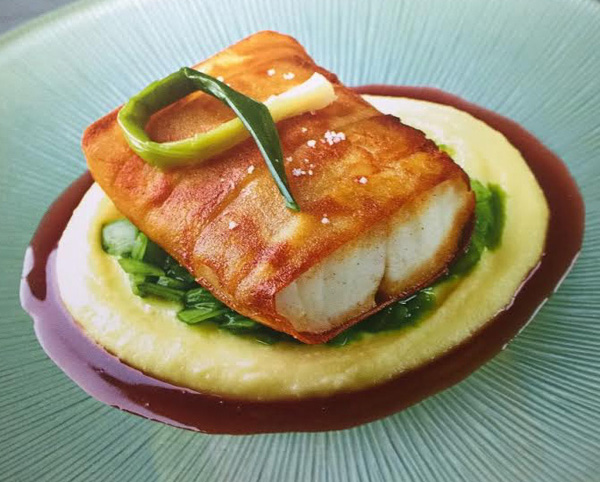

Sea Bass en Paupiette

Description
A special dish made from Daniel Boulud.
It draws inspiration from the famous fish and chips.
Ingredients
- 6 skinless boneless sea bass fillets
- 2 large Idaho potatoes peeled
- Grapeseed or canola oil for frying
- salt and pepper
- For the Sauce
- ½ bottle red wine
- ½ cup Ruby Port
- ½ cup diced finely shallots
- ½ tsp. black pepper
- 1 sprig thyme
- 1 cup white Veal Stock
- ½ pound cold butter cut in small pieces
- Salt and pepper
- Potato Puree
- 1½ pounds Yukon Potatoes
- 1 pint heavy cream
- 2 tablespoons butter
- Salt and pepper
- Leeks
- 4 large leeks
- 2 cups packed spinach leaves
- 2 tablespoons butter
- 6 baby leeks or scallions for garnish
- sugar salt
- pepper
Steps
- Cut filet to a rectangle
- Slice potatoes
- Lay potato strips on wax paper and brush using butter
- Seal potato wrap around the fish
- Refrigerate for 2 hours
- Cook leeks with butter for 5 minutes and season with salt and pepper
- set paupiettes on teh leeks and garnish with some thyme and baby leek